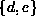
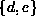

Data Structures and Algorithms
with Object-Oriented Design Patterns in Java
Data Structures and Algorithms
with Object-Oriented Design Patterns in JavaIn mathematics a set is a collection of elements, especially a collection having some feature or features in common. The set may have a finite number of elements, e.g., the set of prime numbers less than 100; or it may have an infinite number of elements, e.g., the set of right triangles. The elements of a set may be anything at all--from simple integers to arbitrarily complex objects. However, all the elements of a set are distinct--a set may contain only one instance of a given element.
For example, ,  ,
,  , and  are all sets
the elements of which are drawn from .
The set of all possible elements, U, is called the
universal set .
Note also that the elements comprising a given set are not ordered.
Thus,
, and  are all sets
the elements of which are drawn from .
The set of all possible elements, U, is called the
universal set .
Note also that the elements comprising a given set are not ordered.
Thus,  and are the same set.
and are the same set.
There are many possible operations on sets. In this chapter we consider the most common operations for combining sets--union, intersection, difference:
Figure  illustrates the basic set operations using a
Venn diagram .
A Venn diagram represents the membership of sets by regions of the plane.
In Figure the two sets S and T divide the plane into the
four regions labeled I-IV.
The following table illustrates the basic set operations
by enumerating the regions that comprise each set.
illustrates the basic set operations using a
Venn diagram .
A Venn diagram represents the membership of sets by regions of the plane.
In Figure the two sets S and T divide the plane into the
four regions labeled I-IV.
The following table illustrates the basic set operations
by enumerating the regions that comprise each set.
Figure: Venn diagram illustrating the basic set operations.
| set | region(s) of Figure |
| U | I, II, III, IV |
| S | I, II |
| S' | III, IV |
| T | II, III |
|
| I, II, III |
|
| II |
| S-T | I |
| T-S | III |
 Copyright © 1998 by Bruno R. Preiss, P.Eng. All rights reserved.
Copyright © 1998 by Bruno R. Preiss, P.Eng. All rights reserved.